Department of Mechanical Engineering, University of Texas at Dallas
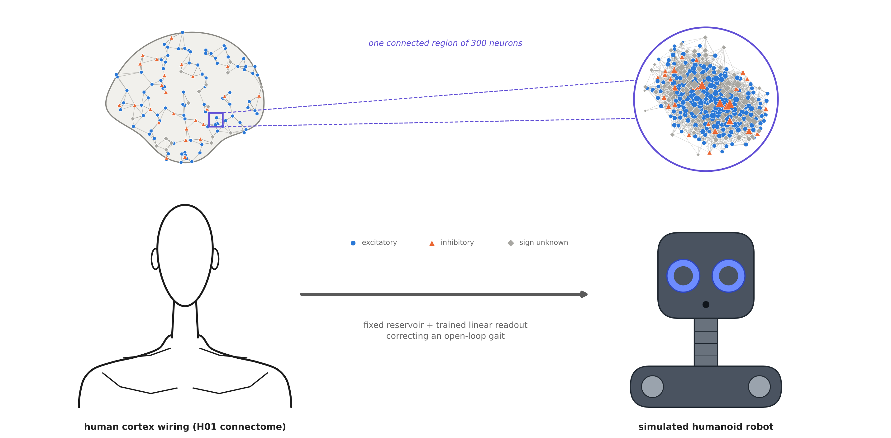
Can the wiring of a human cortical microcircuit serve as the recurrent core of a robot controller? To ask this, we took the H01 human temporal cortex connectome (Shapson-Coe et al., 2024), extracted a directed, signed graph of 16,599 neurons and sampled 300-neuron subgraphs. Each subgraph became the fixed recurrent network of a reservoir whose linear readout adds small corrections to an open-loop gait of a simulated DARwIn-OP pushing a box. We compared it with degree-preserving shuffles, random graphs, a standard echo-state network (ESN), three sign policies, a memoryless linear readout and a constant correction, over three subgraphs and 30 evaluation episodes per subgraph.
Trained readouts raised the success rate from 33% (open loop) to between 60% and 99%, depending on the reservoir. With signs randomised, real and shuffled wiring scored 94% and 97% (p = 0.7), and a constant correction with three trained numbers reached 99%, equal to the best reservoir. This is a very specific task that is easy to train and does not require feedback, so it is not demanding enough to show whether structuring a network on human brain wiring helps; a more complex test would allow a better evaluation. The measured sign assignment lowered performance on one subgraph. We report these results, the controls that accompany them, and a pre-registered protocol for next steps: more refined and more difficult tasks that require adaptation.
One cubic millimetre of human cortex, 16,599 neurons, 300 of them in a reservoir.
H01 (Shapson-Coe et al., Science, 2024) reconstructs about 1.05 mm³ of left anterior middle temporal gyrus. We read the 166 Avro shards of the c3 synapse tables, kept rows linking two neurons, counted a cell as a neuron if it had at least 5 soma-labelled rows and 20 dendritic-receiver rows, and built a directed graph with 87,706 connections. Each neuron takes one sign (Dale's principle) from the type of its output synapses, with type 1 read as inhibitory, a working assumption we flag throughout. Subgraphs grow from a random neuron in the strongly connected core by repeatedly adding the most strongly tied outside neuron.
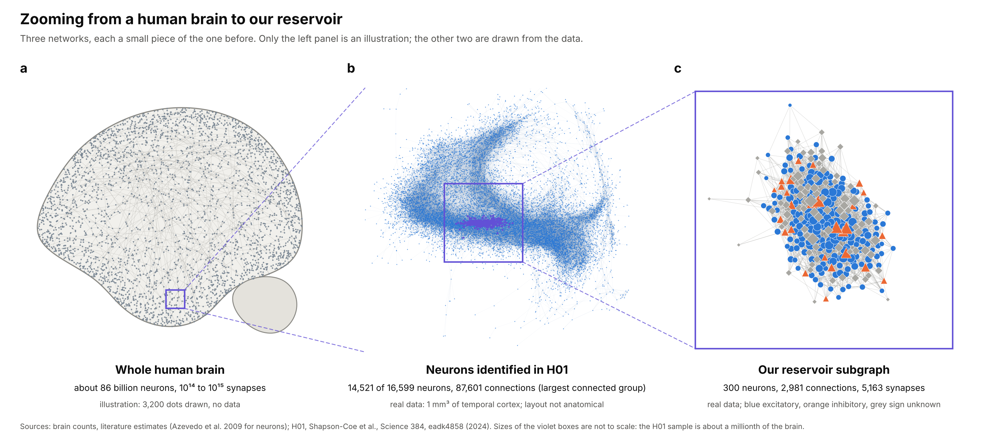
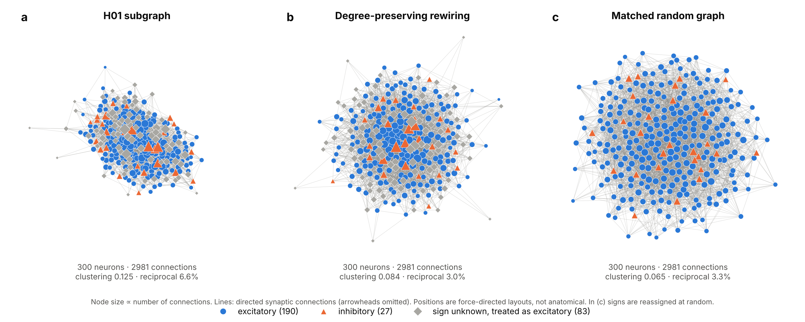
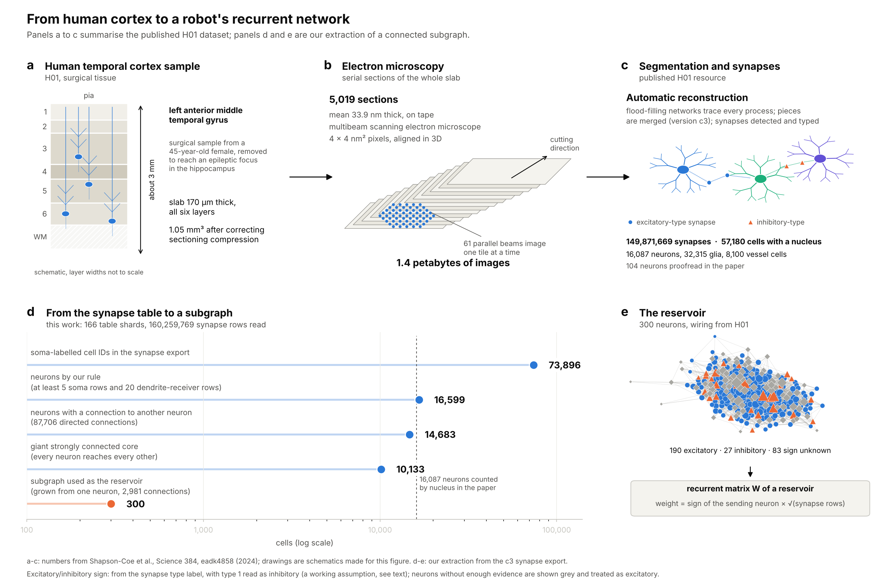
Each neuron gets one sign (excitatory or inhibitory), assumed from the reconstructed synapse type. Excitatory senders push a target up, inhibitory ones push it down; neurons with no sign evidence default to excitatory.
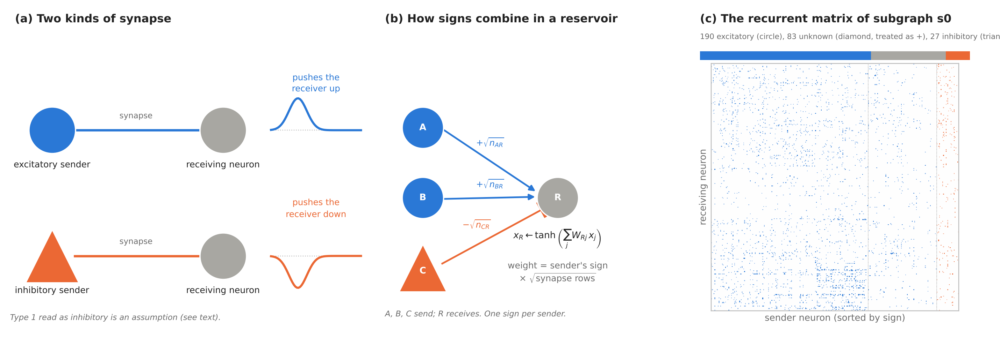
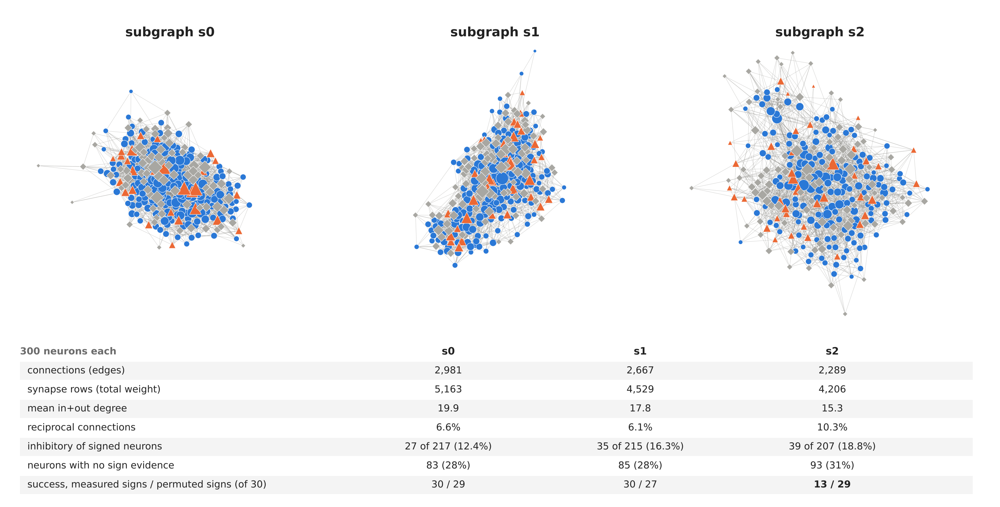
The policy is evaluated on a pushing task, a simple test of robot manipulation that also exercises whole-body humanoid motion.
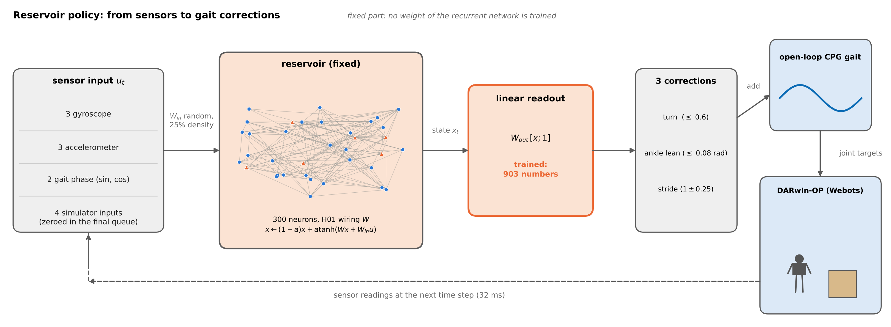
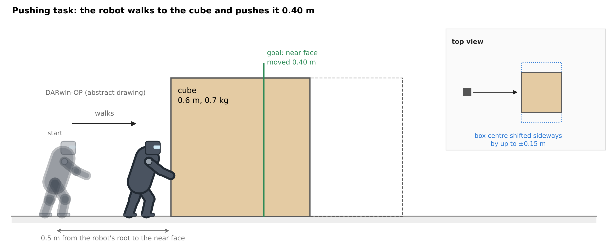
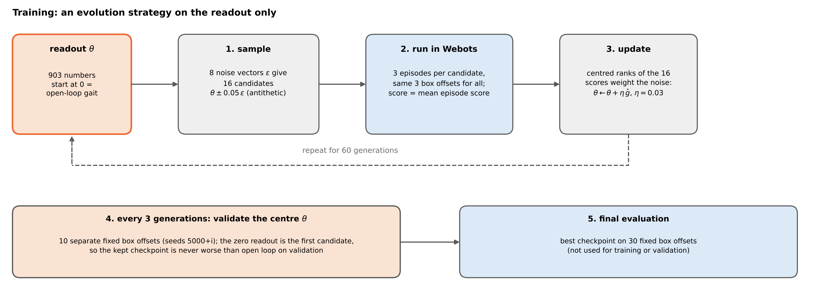
Final queue: 30 evaluation episodes for each of three subgraphs.
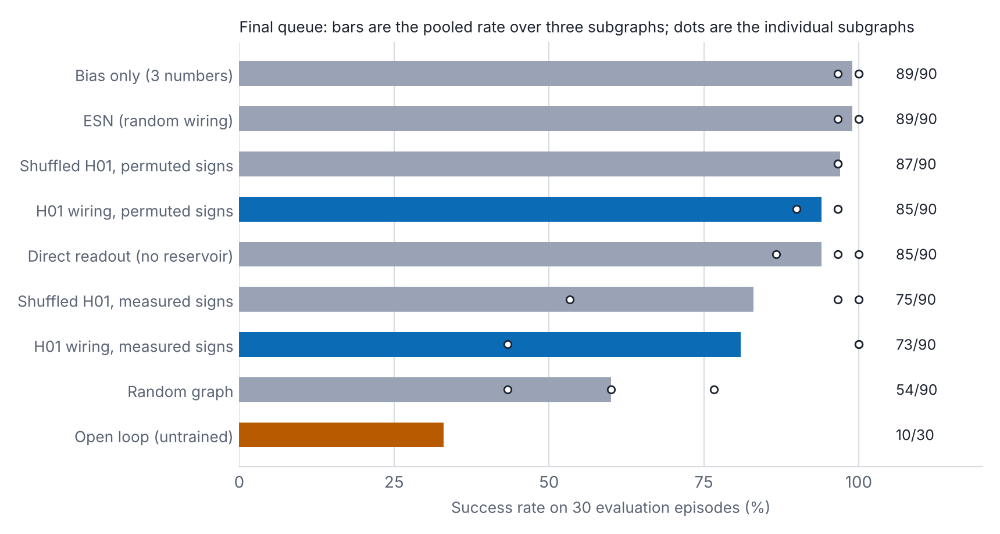
| Comparison | Successes (of 90 each) | Fisher p |
|---|---|---|
| H01 measured signs vs shuffle (same signs) | 73 vs 75 | 0.85 |
| H01 permuted signs vs shuffle + permuted signs | 85 vs 87 | 0.72 |
| H01 measured vs H01 permuted signs | 73 vs 85 | 0.011 |
| H01 measured signs vs random graph | 73 vs 54 | 0.003 |
| Bias-only vs direct readout | 89 vs 85 | 0.21 |
| Bias-only vs ESN | 89 vs 89 | 1.0 |
The p-values are descriptive: episodes within a run are not independent, and there are only three subgraphs. With signs randomised, real and shuffled wiring were indistinguishable. Measured signs lowered success on one subgraph (13 and 16 of 30 against 29 and 29 with permuted signs); our sign labels may be noisy, so we do not read this as a statement about real cortex.
Repeated open-loop evaluations on identical box offsets were not identical (10 of 20 in one run, 5 of 20 in another), so differences of a few episodes are within noise. Part of one queue was invalid because the physics world entered a state where every episode was an instant fall; those eight runs were discarded and redone after automatic detection and reload were added. Three controls (shuffle + permute, direct, bias) were added after the main queue and are labelled as such.
Screen recordings from Webots of the simulated DARwIn-OP pushing the 0.6 m box.
Left: the open-loop baseline, the calibrated walker with the readout at zero. Right: a training run with an H01-subgraph reservoir, in which the readout is being trained. The training recording shows candidate readouts being tried one after another, so it is a qualitative view of the behaviour and not a count of successes; success rates are in the results table.
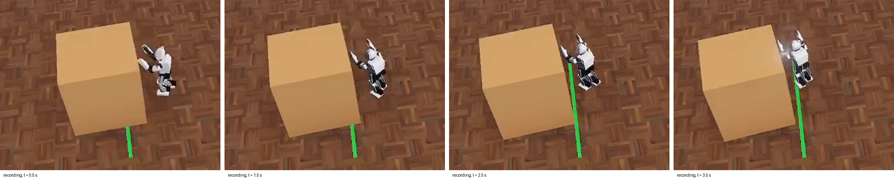
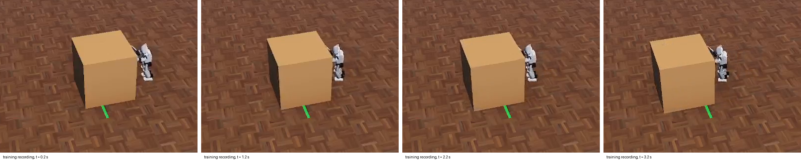
A constant correction solves this task, so a better test needs more refined and more difficult tasks, with conditions that change from episode to episode, so the contribution of connectome-derived wiring can be assessed better. Any such test keeps the matched controls and the pre-registered protocol, and tests a network only if the simple baselines fail the task.
Everything needed to rerun the robot experiments is in the repository; rebuilding the graph from the raw H01 tables is optional (it needs about 30 GB of downloads and many hours).
git clone https://github.com/MrO9/exohominid
cd exohominid
# 1. Open webots/worlds/push_box.wbt in Webots R2025a
# 2. Edit MODE in webots/controllers/h01_dataset_policy/config.py:
# "check" -> "baseline" -> "res_check" -> "train" / "queue" -> "eval"
# 3. Results are written to webots/controllers/h01_dataset_policy/results/See REPRODUCE.md for the full steps and LOG.md for the dated project log, including every failure.
@misc{onyenze2026exohominid,
author = {Onyenze, Jude},
title = {ExoHominid: A Human Connectome-Structured Reservoir Policy for Robot Learning},
year = {2026},
note = {Preprint in preparation. Code: https://github.com/MrO9/exohominid}
}